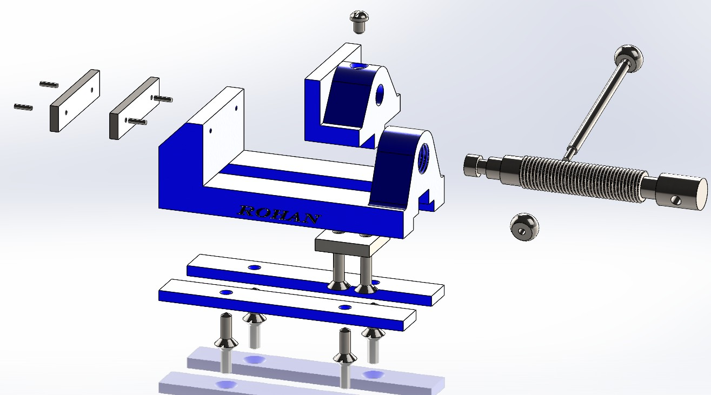

Exploded Assembly View
Exploded configuration showing the vice body, fixed and sliding jaws, leadscrew, handle, fasteners and jaw plates. This view communicates how each component locates and assembles onto the base.
A bench vice is a work-holding device used to clamp components securely during cutting, drilling, filing or assembly operations. The fixed and moving jaws provide a large, flat gripping area while the leadscrew and handle convert hand torque into reliable clamping force.
This design uses a robust cast-style body, replaceable serrated jaw plates and a protected sliding mechanism so that the vice can withstand repeated tightening without damaging the workpiece or the screw.
Work-holding vice assembly modelled, detailed and animated in SolidWorks.
This bench vice project focuses on building a fully constrained assembly, applying correct mates for the sliding jaw and leadscrew, generating exploded and section views, and detailing the jaw serrations with GD&T. The assembly was modelled, documented and animated entirely in SolidWorks.
Exploded configuration showing the vice body, fixed and sliding jaws, leadscrew, handle, fasteners and jaw plates. This view communicates how each component locates and assembles onto the base.
Sectioned view cutting through the sliding jaw, screw and nut housing. It highlights the guide slot, constraint features and clearances that allow smooth motion while keeping the jaw aligned under load.
Detail A of the jaw screw serrations, scaled 5:1, showing 2 mm pitch, 60° tooth angle and 1.08 mm depth. A parallelism tolerance of 0.05 mm relative to datum A controls orientation of the gripping profile, demonstrating application of GD&T to functional contact surfaces.
Reciprocating motion study showing the sliding jaw opening and closing using the leadscrew and handle, with correct mates and travel limits applied to the mechanism.
The vice is driven using a rotary input on the handle, transferring motion through the screw to generate linear travel of the moving jaw. The study validates mate selection, clearances and end-stop positions for the full clamping range.